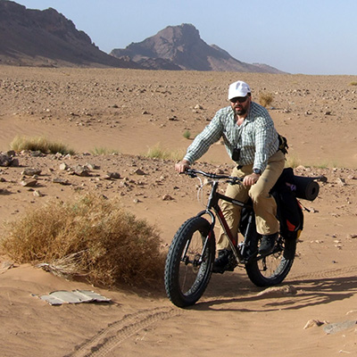
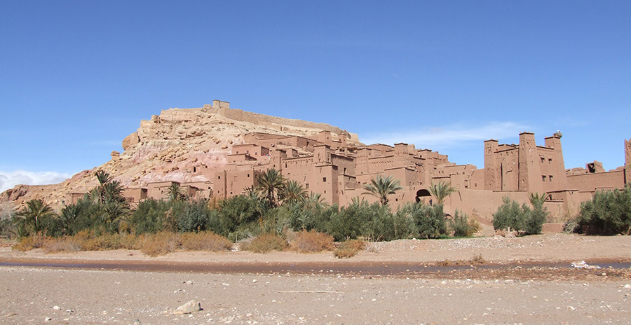
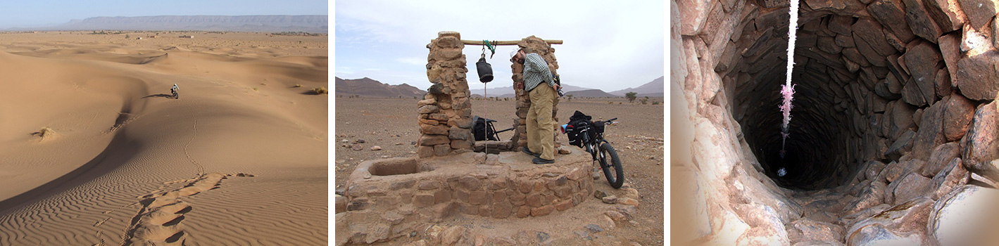
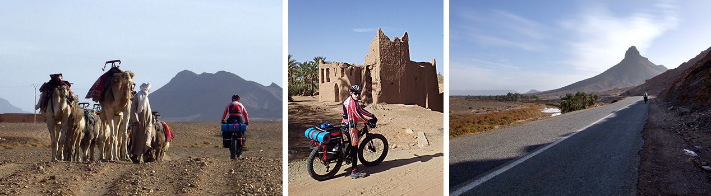
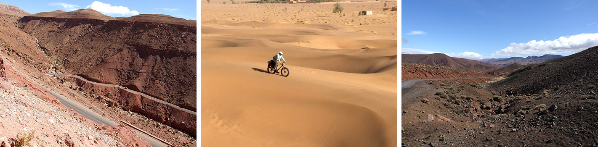
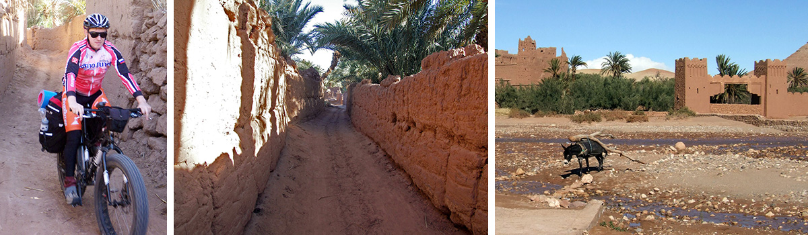
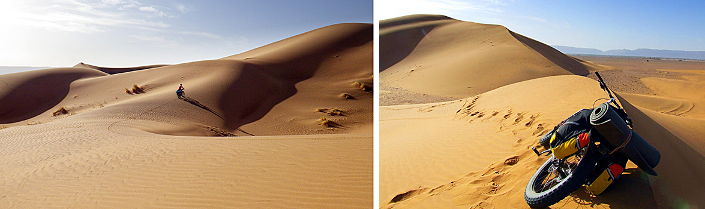
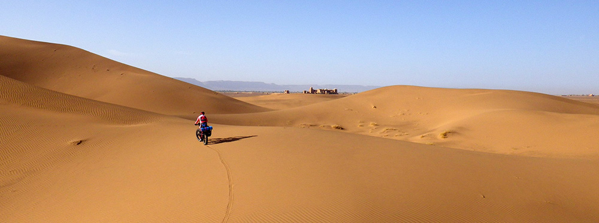

Вступительное слово И. Гуревича.
Друзья! Если Франция или Италия - гордость мира западного, лидеры западного изящества, стиля, образа жизни, то в мире востока такой страной-гордостью является Марокко. Марокко — одна из самых загадочных и красивых стран, где сказки тысячи и одной ночи кажутся явью. Марокко не просто обладает восточным колоритом, но и удивительной природой. Горы высокого Атласа делят ее на три части: прибрежную, горную и пустынную, где властвует Сахара. В Марокко можно увидеть настоящие пустынные дюны (барханы), древние Касбы (крепости) , горные ущелья, сложенные из горных пород разного цвета. И, пожалуй, главное, что потрясает наших современников, - это возможность окунуться в атмосферу востока. А она удивительна! Наш маршрут проходит, на мой взгляд, в одном из самых интересных районов Марокко. Аккурат на границе гор и пустыни. Здесь намного больше патриархальности, чем в столице этой страны. Здесь можно найти кафе, настоящее, местное, где люди едят, не используя приборов. Они берут еду кусочками хлеба. А если дают приборы, то они... сделаны вручную местными мастерами. Конечно, беспощадная индустриализация добирается и сюда, и уже можно увидеть вилку с заводским заокеанским клеймом... Увы. Удивительны города востока. Они, как восточные женщины, которые носят хиджаб, а под - ним изысканные одеяния и украшения. Их красоту увидит не каждый, а лишь тот, кому дозволено этот хиджаб снять. Так и в городах. Вы можете идти по старинной улице, которая больше напоминает грязный гаражный проезд на окраине наших городов. Но вы заходите в приземистую дверь, и перед вами роскошь востока. Ковры, фонтаны, нередко птицы в клетках... Марокко открывает перед человеком удивительный мир востока, который обязательно надо увидеть. Без визита в эту страну невозможно сказать, что вы видели этот мир, эту планету. На нашу удачу, из всех великих стран востока Марокко является самой безопасной. Здесь бывают миллионы туристов со всего мира!
Обратим внимание, что наш маршрут идет по самым разным дорогам и даже «дорогам». Асфальтовых дорог на маршруте минимум. Ведь, чтобы увидеть самое интересное в Марокко, надо забраться далеко от цивилизации! Мы будем много ездить по пустынным дорогам, грунтовкам. Это будет безумно интересно, но требует определенного навыка. Просто не будет. Хотя машина сопровождения и гиды всегда будут вам в помощь!
Удачного вам похода. Для иллюстраций использованы фотографии И. Гуревича и Д. Кимбера 2015 года.
Марокко: Марракеш – Атлас - Сахара.
Наш второй африканский маршрут проведет вас по грунтовкам и тропам юго-востока Марокко. Начав путь по плато и каньонам предгорий Атласа, мы пересечем горный массив Сагро, проедем по оазисам легендарной долины Драа и закончим маршрут среди барханов Сахары.
День 1, суббота. Прибытие в Марракеш.
Встреча в аэропорту и трансфер в гостиницу. Вечерняя прогулка по городу. Марракеш — город, от которого и произошло название страны, один из величайших городов востока. Самая красивая часть — древняя Медина, обнесенная стенами. Внутри улицы так узки, что проезда для автомобилей практически нет. Марракеш - удивительный город, в котором можно провести много времени просто наблюдая за жизнью местных жителей. А местные жители все еще не забыли старинные профессии, и в городе можно увидеть работающих в своих мастерских гончаров, портных или кузнецов.
День 2, воскресенье. Трансфер в Гесат 210 км, Гесат – Тундут. 32 км, набор высоты 450 м.
По пути из Марракеша мы увидим природный арочный мост в Деманте. За перевалом Тизи н’Федгат зеленые пейзажи северных склонов сменятся каменистой пустыней юга. Мы садимся на велосипеды в Гесате и едем по живописной дороге-колее на восток через пустынное плато в долину Имегран. Ночлег и ужин в приюте в деревне Тундут.
День 3, понедельник. Тундут – Бу Тхарар. 70 км, набор высоты 750 м.
По мере подъема долины и деревни постепенно уступают место пустыне. Мы пересекаем полынное нагорье и спускаемся в глубокое ущелье н’Кати. Едем по тропе, многократно пересекая вброд русло реки. На выходе из каньона открывается великолепная зеленая долина, по которой разбросаны берберские деревни. Ночлег и ужин в гостинице.
День 4, вторник. Бу Тхарар – массив Сагро. 76 км, набор высоты 1050 м.
В первой половине дня мы едем по живописным долинам рек Мгун и Дадес. Среди полей, деревень и домов-крепостей мы начинаем подъем на массив Сагро. Каждая промежуточная вершинка кажется перевалом, но за ней открывается новый подъем. Наконец, преодолев перевал Тадурт, мы останавливаемся на ночлег в горном приюте.
День 5, среда. Сагро – Тансикхт. 65 км, набор высоты 1200 м.
Мы продолжаем путь через самую дикую часть массива Сагро, по подъемам и спускам, каньонам и серпантинам. Мы смотрим красивейшие ущелья, которые пробили воды за тысячи лет своей работы. По мнению ученых, вполне возможно, что когда-то в Сахаре шумел лес, и тут было много дождей. Может быть, эти ущелья помнят это время. На остановках любуемся заснеженными вершинами Атласских гор. Вокруг нас – каменистая пустыня, лишь изредка попадаются лагеря кочевников и одинокие дома, окруженные миндальными деревьями и пальмами. В конце длинного спуска мы въезжаем в сухое русло (вади) и, наконец, достигаем долины Драа. Ночлег и ужин в гостинице в Тансикхте.
День 6, четверг. Тансикхт - Тиссергат. 72 км, набор высоты 500 м.
Сегодня мы проедем по оазисам долины Драа, удивительно зеленой в контрасте с окружающей ее пустыней. Наш путь проходит по колеям и тропам среди пальмовых рощ, полей, через деревни, в которых мы встретим немало домов-крепостей. Здесь мы окунемся в местную деревенскую жизнь. Босоногие мальчишки-подростки, работающие на ослах, глинобитные дома... На заключительном участке нашего пути мы увидим касбу Тиссергат – один из наиболее впечатляющих образцов местной фортификационной архитектуры. Ночлег и ужин в гостинице.
День 7, пятница. Трансфер в Чигага 160 км, веломаршрут по пустыне 25 км.
Сегодняшний день - комбинированный. С утрам мы на джипах переваливаем через горы Бани. По пути в Загоре увидим знаменитый дорожный указатель «Томбукту – 52 дня» (на верблюдах через пустыню), а в Тамгруте – уникальную библиотеку с древними манускриптами. За перевалом начинаются бескрайние барханы и пески Сахары. Но, оказывается, и тут можно найти места, проходимые для велосипеда. Для разнообразия можно покататься и на верблюдах. Мы заночуем в палатках в лагере кочевников. А перед сном полюбуемся на ни с чем несравнимое звездное небо Сахары.
День 8, суббота. Трансфер в Марракеш 420 км.
Сегодня подъем особенно ранний, чтобы увидеть восход солнца над барханами. После завтрака – долгий трансфер в Марракеш через Танзакхт и перевал Тичка. Ночлег – в традиционной гостинице в центре города.
День 9, воскресенье. Трансфер аэропорт и обратный вылет.
Не верьте предыдущей строчке. Очень советуем задержаться хотя бы еще на день после окончания маршрута и осмотреть Марракеш – оживленный восточный город с интересной архитектурой и колоритным базаром. Сообщите нам, если хотите продлить проживание в гостинице.
Особенности этого маршрута:
Цена путешествия указана на странице Календарь. Там же можно оставить заявку на участие в походе.
В эту указанную цену входит:
В эту сумму не входит:
Подать заявку можно со страницы Календарь.
{/block}